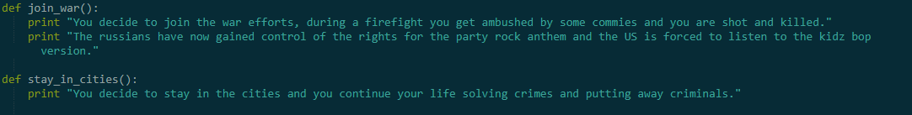
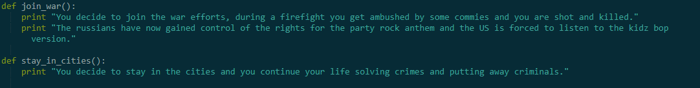

The next project was done in python, my partners Ismael, Nathan, and I were tasked with the request to create an interactive story. We created a story with many different choices which would lead to a few different endings. As you can see in the code below, each line of text would lead to a choice the user has to make, depending on the answer it would trigger a different text depending on the answer, this would continue until an end is reached. Two endings can be seen in the code, and end can be noticed easily because there is no following code to offer some kind of choice.

 
